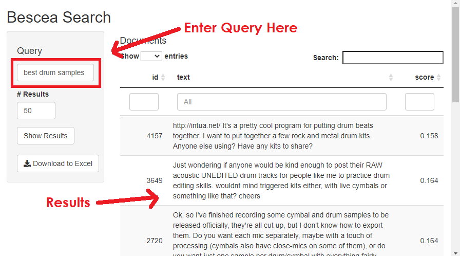

Introducing Bescea
February 16, 2021
I want to share Bescea, an instant search engine for text. This is perhaps most useful if you want to search through a data frame to find documents about a particular topic.
Installation
devtools::install_github("harryahlas/bescea")
Run Bescea
library(bescea)
besceaApp(data = sneapsters,
text_field = "post_text",
unique_id = "textid")
